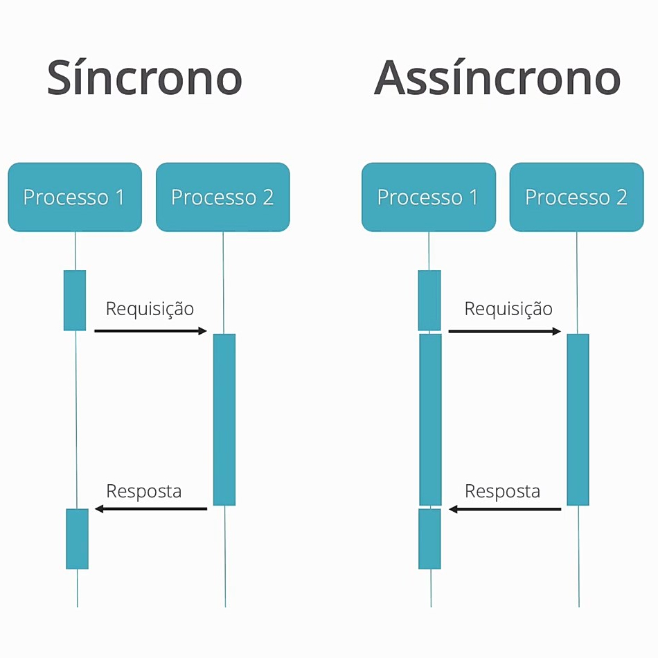

Um promise é uma promessa de resposta. Essa estrutura busca padronizar a forma de criação de funções assíncronas.
let fnResolve = function(resposta){
//faz alguma coisa com a resposta
};
let fnReject = function(erro){
//trata o erro
};
fnAsync(dados).then(fnResolve, fnReject)Resolve e Reject são os nomes comunente usados com Promises para as funções de sucesso e de falha.
Uma chamada de função assíncrona deve incluir a função a ser executada quando a operação for concluída
let fnSucesso = function(resposta){
//faz alguma coisa com a resposta
}
let fnFalha = function(erro){
//trata o erro
}
A função assíncrona executará o processo usando os dados. Quando ela concluir a operação, executará a função callback de sucesso ou a função callback de falha.
Nós podemos criar nossas próprias funções assíncronas usando um Promise.
function fnAsync(dados){
//faz alguma coisa com os dados
return new Promise(function(resolver, reject){
if(ok)
resolve(resposta);
else
reject(erro);
});
}